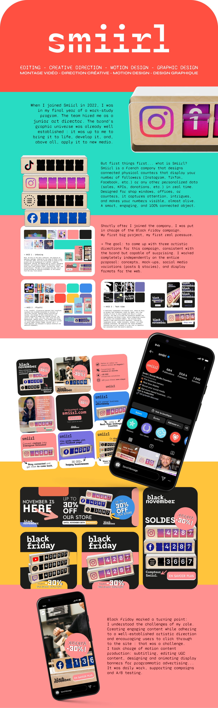
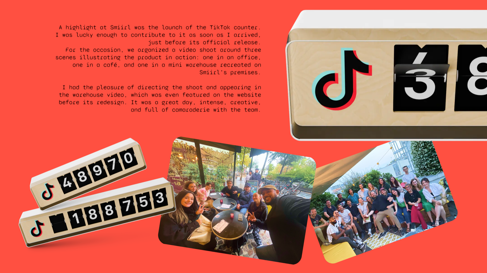

I had the opportunity to direct two video shoots during my year at Smiirl: one in a café in Paris's 5th arrondissement, Loutsa, and the other directly at the brand's premises.
The aim of the first was to showcase the Instagram counter in a real-life context, to illustrate its usefulness in stores and its ability to attract customers' attention.
In addition to the storyboard provided, I gave instructions to the videographer on site. Since I was going to be the one using the rushes for editing and campaigns, it was essential that I keep an eye on each shot to ensure their relevance and visual consistency.



This year at Smiirl has been a rich and exciting experience. I have learned a lot, about myself, my profession, and the demands of working independently. Working remotely has taught me discipline and the importance of organizing my time well, and the diversity of assignments has allowed me to push my skills in motion design and video editing.
I also had the opportunity to direct several shoots: a real immersion in the role of artistic director, which was both challenging and educational. The Smiirl experience is still helping me on the daily to manage jobs and now people!
Thank you to the whole team, and in particular to Alissa and Gaël for their trust, kindness, and support throughout this adventure. Thank you, Smiirl! <3